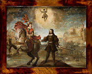

Algunos milagros de San IsidroAutora: Yolanda Gallego MonederoNo todos sabrán de la gran cantidad de milagros que se le atribuyen a San Isidro Labrador, muchos de ellos, post mortem. Cuatrocientos treinta y ocho milagros en total, de los cuales vamos a contar aquí los más conocidos. El pozo de San Isidro: Mientras que San Isidro estaba trabajando en el campo, su hijo Illán cayó a un pozo muy profundo. Al llegar a casa, su mujer, Santa María de la Cabeza, se lamentaba desesperada por lo que había ocurrido. Ambos se pusieron a rezar junto al pozo, y milagrosamente el agua empezó a subir hasta que el niño subió a la superficie. Este pozo puede verse en el Museo de San Isidro, en la Plaza de San Andrés, en Madrid.
Ayuda divina en el campo: Es conocido el milagro que cuenta que mientras que San Isidro trabajaba la tierra, dos ángeles labraban la tierra ayudados por bueyes, mientras él rezaba. La olla de San Isidro: El Santo organizaba de forma periódica comidas para los pobres. Parece ser que en cierta ocasión, faltándole viandas para tantos asistentes, comenzó a rezar, y mientras que servía cazos de comida, ésta parecía no acabarse nunca en la olla. Aparición de fuentes y manantiales:  Un día muy caluroso que San Isidro estaba trabajando el campo, le visitó su señor, Iván de Vargas, pidiéndole un poco de agua. El Santo se dio cuenta que se le había acabado la suya, así que dando un golpe en el suelo con su cayado diciendo “Cuando Dios quería aquí agua había”. Entonces empezó a brotar agua del suelo. En ese punto, desde entonces, es una fuente a cuya agua, muchos atribuyen propiedades curativas. También en ese punto, la emperatriz Doña Isabel mandó construir una ermita, en el año 1528. El saco de grano misterioso: Un día nevado, se dirigía San Isidro a un molino, cargado con un saco de grano para sus animales. Vio unos pájaros que no podían comer pues sobre la nieve no encontraban la comida, así que les echó grano del que llevaba en el saco. Cuando llegó al molino, comprobó que el saco de grano estaba otra vez lleno. El cuerpo incorrupto: San Isidro murió en 1172 y fue enterrado junto a la iglesia de San Andrés en Madrid. Décadas más tarde, sus restos fueron exhumados y sorprendentemente, el cuerpo estaba incorrupto. Ayuda en la Batalla de las Navas de Tolosa: Alfonso VIII obtuvo victoria en la batalla de las Navas de Tolosa. Cuenta el monarca que el consejo de un pastor, que les indicó un camino secreto en Sierra Morena, fue decisivo para sorprender a los musulmanes y derrotarles. A posteriori, Alfonso VIII reconoció en el cuerpo inerte e intacto de San Isidro Labrador, al pastor que le había aconsejado en la batalla; se le había aparecido muerto para llevarles a la victoria. Sanación de Felipe III: Estaba Felipe III muy enfermo y pidió que le llevaran el cuerpo de San Isidro para intentar con esto que su salud mejorara. Efectivamente, nada más ver el cuerpo del Santo, Felipe III empezó a recuperarse. El rey, en agradecimiento al Santo, inició los trámites para la beatificación de San Isidro, siendo efectiva el 14 de abril de 1619. |
 Revista San Isidro 2015  Revista San Isidro 2015 |
BREVE HISTORIA AGRÍCOLA Y GANADERA (2ª Parte)
En el Priorato de San Juan se tenía costumbre de prestar a los agricultores un tercio de los diezmos para la siembra.
En el Libro de Cuentas 1612-1628 folio 90 nos encontramos la siguiente reseña:
“Mas doce reales que pagó a Diego García de Siruela, vecino desta villa, ...
En el Priorato de San Juan se tenía costumbre de prestar a los agricultores un tercio de los diezmos para la siembra.
En el Libro de Cuentas 1612-1628 folio 90 nos encontramos la siguiente reseña:
“Mas doce reales que pagó a Diego García de Siruela, vecino desta villa, ...

EL HISTORIAL CAMPESINO
Fácil es señor doctor,
decir no bebas más vino
y que difícil que es
para el que nació campesino.
Yo que desde muy pequeño
dediqué mi vida entera
y en darle puse mi empeño,
rango, prestigio y solera..
Fácil es señor doctor,
decir no bebas más vino
y que difícil que es
para el que nació campesino.
Yo que desde muy pequeño
dediqué mi vida entera
y en darle puse mi empeño,
rango, prestigio y solera..
ALGUNOS MILAGROS DE SAN ISIDRO
No todos sabrán de la gran cantidad de milagros que se le atribuyen a San Isidro Labrador, muchos de ellos, post mortem. Cuatrocientos treinta y ocho milagros en total, de los cuales vamos a contar aquí los más conocidos.
No todos sabrán de la gran cantidad de milagros que se le atribuyen a San Isidro Labrador, muchos de ellos, post mortem. Cuatrocientos treinta y ocho milagros en total, de los cuales vamos a contar aquí los más conocidos.
SOLAMENTE HACE 50 AÑOS ...
Tuvo lugar una catástrofe climatológica en toda la zona de La Mancha. Un gran frente frío cruzó toda la Península dejando fuertes heladas y copiosas nevadas que hizo que durante varios días la nieve se quedara congelada sobre todos los cultivos de la zona.
En esos días, concretamente durante los días del 19 al 22 de Febrero de 1.965 ...
Tuvo lugar una catástrofe climatológica en toda la zona de La Mancha. Un gran frente frío cruzó toda la Península dejando fuertes heladas y copiosas nevadas que hizo que durante varios días la nieve se quedara congelada sobre todos los cultivos de la zona.
En esos días, concretamente durante los días del 19 al 22 de Febrero de 1.965 ...
Conoce el reglamento interno, los requisitos de acceso y pasa a formar parte de nuestra Hermandad.

| Teléfono: 654 53 82 29 (Jesús) Casa Parroquial de la Iglesia de San Francisco Plaza de San Francisco, s/n 13600 - Alcázar de San Juan (Ciudad Real) |
Síguenos en |